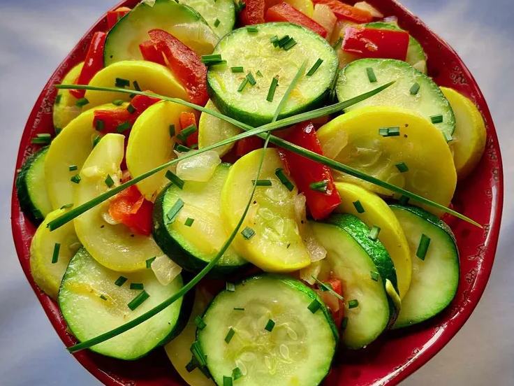

Yellow squash, zucchini, onions, and red bell peppers are abundant in the summer, and they make a beautiful presentation in this easy side dish. Garnish with a few fresh chives, if you like.
Step 1
Heat butter and olive oil together in a large non-stick skillet over medium-high heat. Add onion once butter is bubbly; cook and stir for 2 minutes. Add bell pepper and cook for 1 minute. Stir in yellow squash and zucchini slices. Season with salt and pepper. Cook, stirring, for about 3 minutes.
Step 2
Stir in minced garlic and cook, stirring, about 1 minute. Keep cooking, stirring continuously, until squash has desired texture, 2 to 3 minutes.
Step 3
Sprinkle with minced chives before serving.